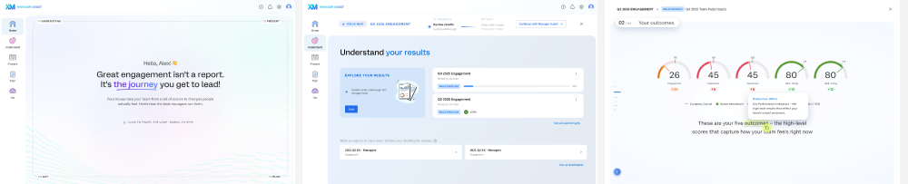

QUALTRICS
⌃I lead UX direction and product innovation for AI-powered experiences, from early concept development and research through interactive prototyping and implementation.

01 / THE OPPORTUNITY
The work often starts before the solution exists. I explore where AI can create real value and what new interaction models the product may need.
02 / THE EXPLORATION
I combine research, conceptual design, and hands-on AI experimentation using storyboards, interactive prototypes, prompts, context, and model behaviour.
03 / THE INTERACTION MODEL
I define Human-AI Interaction: what the system needs to understand, how it should behave, where people stay in control, and how feedback and output quality are handled.
04 / WHAT CHANGED
My concepts and experiments influence product direction, requirements, and technical decisions, while also shaping how Design, Product, and Engineering work together on AI products.